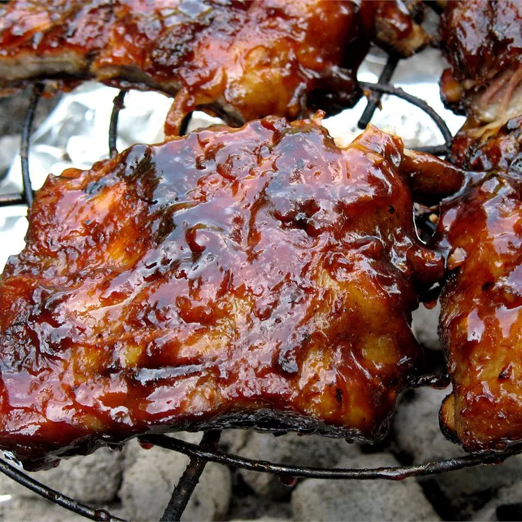

Home
Perfect Ribs

Two day ribs, but worth the effort. Baked and marinated with a rub overnight, then grilled with barbecue sauce.
Believe the hype-- these were fantastic! I don't have a grill so for the grill part, I just put them in the oven
at 350 degrees, basting frequently. As recommended, I made double the sauce and didn't leave it over for
dipping--- I just slathered the whole amount on there throughout basting! The first time, I didn't listen to
others advice and only made the standard amount of sauce. Big mistake! Make double!The sauce was finger-licking
good (I mean literally) and I was so pleased that I made my own sauce. No more store-bought-- this one's a
keeper! As other people mentioned, I also added a bit of chili pepper flakes for some heat, and it was the
perfect balance. Thanks for the recipe for these tender, delicious ribs!
Ingredients
- 4 pounds baby back pork ribs
- cloves garlic, sliced
- 1 tablespoon white sugar
- 1 tablespoon paprika
- 2 teaspoons salt
- 2 teaspoons ground black pepper
- 2 teaspoons chili powder
- 2 teaspoons ground cumin
- ½ cup dark brown sugar
- ½ cup cider vinegar
- ½ cup ketchup
- ¼ cup chili sauce
- ¼ cup Worcestershire sauce
- 1 tablespoon lemon juice
- 2 tablespoons onion, chopped
- ½ teaspoon dry mustard
- 1 clove crushed garlic
Directions
- Preheat oven to 300 degrees F (150 degrees C). Place ribs on a rack in a shallow roasting pan. Scatter 4 cloves
of sliced garlic over ribs. Cover, and bake for 2 1/2 hours. Cool slightly.
- In a small bowl, mix together white sugar, paprika, salt, black pepper, chili powder, and ground cumin. Rub
spices over cooled ribs. Cover, and refrigerate overnight.
- In a small saucepan, mix together brown sugar, cider vinegar, ketchup, chili sauce, Worcestershire sauce, lemon
juice, onion, dry mustard, and 1 clove garlic. Simmer over medium-low heat, uncovered, for 1 hour. Reserve a
small amount for basting; the remainder is a dipping sauce.
- Preheat grill for medium heat.
- Place ribs on grill. Grill, covered, for about 12 minutes, basting with the reserved sauce, until nicely browned
and glazed. Serve with remaining sauce for dipping.